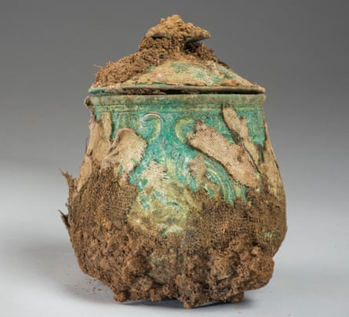
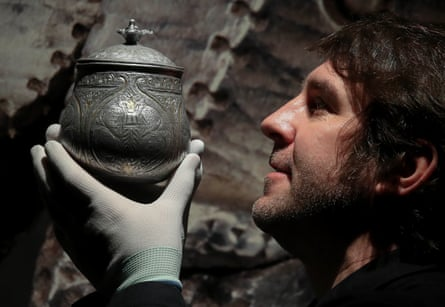

It is a star object of the Galloway Hoard , the richest collection of Viking-age objects ever found in Britain or Ireland, buried in AD900 and unearthed in a field in Scotland. Now a lidded silver vessel has been identified as being of west Asian origin, transported halfway around the world more than 1,000 years ago.
When it emerged from the ground a decade ago, the vessel was still wrapped in its ancient textiles, whose survival is extremely rare. Its surface could be seen only through X-ray scans. Since then, the textiles have been partially removed and preserved and the vessel has had laser cleaning to remove green corrosion over much of its silver surface. It has also undergone scientific analysis.
Details of a “remarkable” design that includes crowns, fire altars and creatures including leopards and tigers can be seen for the first time.
The imagery is linked to the iconography of Zoroastrianism, the state religion of the Sasanian empire, the last Persian empire before the early Muslim conquests from AD632. Scientific analysis shows that the silver from which it was made came from a mine in modern-day Iran .
The hoard was discovered in 2014 by a metal-detecting enthusiast on what is now Church of Scotland land at Balmaghie, Kirkcudbrightshire. Described as one of the century’s most important UK archaeological finds, it contained more than 5kg of silver, gold and other materials, with objects ranging from a Christian pectoral cross to brooches.
The vessel before it was restored.Photograph: Santiago Arribas/Historic Scotland
It was allocated to the National Museums Scotland (NMS), which will announce its findings about the vessel this week before its first-ever display, on loan to the British Museum’s forthcoming Silk Roads exhibition.
Dr Martin Goldberg, the NMS principal curator of early medieval and Viking collections, told the Observer : “Seeing those tigers for the first time is really an amazing thing.
“Although the technology is so advanced, the 3D scans don’t give you the colour. They don’t really give you the response that you get from this newly emerging thing.”
Noting that they had suspected its origins in central or western Asia, he added: “I had some trepidation that we wouldn’t get the answers we needed from the lead isotope analysis, but then I was just blown away when we got the perfect results.
“The central icon is what they call a fire altar. This was a motif used on Sasanian imperial coinage. It’s central to their religious practice. But this has a crown emerging from the flames. That probably says this is an object intended for or used by royalty.”
Sasanian emperors were often shown hunting leopards and tigers.The vessel is about 14cm high. It contained many of the hoard’s unique curios, including a rock crystal jar. Goldberg believes that this was an heirloom filled with “the memories and the heritage of an incredibly high-status and well-connected family”.
Martin Goldberg holds a 3D reconstruction of the lidded vessel.Photograph: Andrew Milligan/PA
He said: “It travelled thousands of miles to reach south-west Scotland. It’s very hard to think what a Christian living in the area might have made of this object unless they knew how it had got here, who had brought it. They might have had their own stories about this object. We know that people were certainly making pilgrimages to the Holy Land at this point. Once you’ve travelled that distance, you’re not actually that far away from the origins of where this vessel came from.”
Dr Jane Kershaw, an expert on Viking-age silver from the University of Oxford, with whom the NMS has worked on the project, said: “The vessel is an alloy of silver and relatively pure copper, which is typical of Sasanian silver, but not contemporary European silver.
“In addition, the isotopes of the lead contained within the silver metal and niello match ore from Iran. We can even go so far as to say that the niello derives from the famous mine of Nakhlak in central Iran. It’s fantastic to have scientific confirmation for the distant origins of this remarkable object.”
The Galloway Hoard will eventually go on long-term display at the NMS in Edinburgh, with a significant portion also displayed long term at Kirkcudbright Galleries.